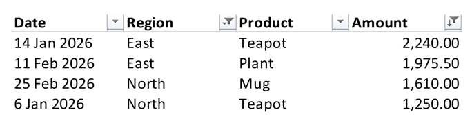

Filtering
An AutoFilter puts drop-down buttons on the header row of a range, as Excel's Data → Filter does, so that its rows can be filtered and sorted in Excel. Adding and removing a filter changes the workbook, so open the file with mode="rw" (or start from XLSX.newxlsx). Filters can be read from any file.
XLSX.openxlsx("sales.xlsx", mode="rw") do xf
sheet = xf["Sales"]
XLSX.setAutoFilter(sheet, "A1:F200") # row 1 holds the headers
endXLSX.setAutoFilter(sheet, :) filters the sheet's whole used range. The range may also be given as a defined name, or with an XLSXFile as "Sales!A1:F200".
A sheet has a single filter, so setting one on a different range replaces any filter the sheet already has, together with its criteria and sort. Setting the same range again keeps them, unless new ones are given.
julia> XLSX.getAutoFilter(sheet)
A1:F200
julia> XLSX.removeAutoFilter(sheet)
trueRows that a filter hid stay hidden when the filter is removed. Show them with XLSX.setRowHidden(sheet, rows; hidden=false).
Filter criteria and sorting
setAutoFilter can also filter and sort the range, as choosing from the buttons in Excel does. Excel doesn't reapply a filter or a sort when it opens a file, so XLSX.jl does it as it sets them: it hides the rows the criteria don't show and puts the rows in order. The file then opens just as Excel would have saved it.
XLSX.setAutoFilter(sheet, "A1:D9";
filters = ["Region" => ["North", "East"], "Amount" => (">" => 1000)],
sort = "Amount" => :descending)
filters pairs a column with a criterion. The column is given by its header text, as here, by its letter ("D") or by its position in the range (4). A row is shown if it meets every column's criterion. A criterion is:
| Criterion | Shows |
|---|---|
"Red", or ["Red", "Blue", missing] | the cells showing one of the values, in any case; missing for empty cells. Numbers, dates (by the day) and true/false can be listed too. |
">" => 1000 | the cells meeting the condition. The operators are "==", "!=", ">", ">=", "<" and "<=". |
"==" => "A*" | text matching a pattern: * stands for any characters and ? for any one character. ~* is a * itself. |
(">=" => 10, :and, "<" => 20) | cells meeting both conditions; :or for either. |
(:top, 10), (:bottom, 5), (:top, 10, :percent) | the largest or smallest numbers. |
:aboveAverage, :belowAverage | numbers above or below the column's average. |
:today, :thisWeek, :lastMonth, :nextQuarter, :yearToDate, ... | dates in a period relative to today, as Excel's Date Filters menu offers. A week starts on Sunday. |
:Q1 to :Q4, :M1 to :M12 | dates in a quarter or a month of any year. |
sort gives a column, column => :descending, or a vector of them to sort by several. Excel's order is followed: numbers and dates first, then text (in any case), TRUE and FALSE, errors, and empty cells last in either direction. Each row's cells move with their formats, notes and hyperlinks. A formula moves as Excel moves it, as if copied: =B5*2 in row 5 becomes =B2*2 in row 2. Cells outside the range's columns stay where they are.
julia> sheet["A1"] = ["Name" "Score"; "Ann" 7; "Bob" 9; "Cy" 4];
julia> XLSX.setAutoFilter(sheet, "A1:B4"; filters = ["Score" => (">" => 5)], sort = "Score" => :descending)
julia> [sheet[r, 1] for r in 2:4]
3-element Vector{String}:
"Bob"
"Ann"
"Cy"
julia> XLSX.isRowHidden(sheet, 4)
truefilters=[] removes a filter's criteria and shows all its rows. A range with merged cells, with an array formula, or with a formula shared with cells outside it can't be sorted. Filtering by colour or by icon isn't supported.
Filters in Excel Tables
An Excel Table has filter buttons of its own, so a sheet's filter and a table may not overlap: setAutoFilter refuses a range on a table, and addtable!, writetable! with as_table=true, appendtable! and settotals! refuse to place or grow a table onto the filter. XLSX.getAutoFilter returns only the sheet's filter, not those of its tables.
Sheet operations
The filter goes with its sheet: XLSX.copysheet! gives the copy the same filter, and XLSX.renamesheet! and XLSX.deletesheet! keep the hidden name Excel uses to record the filter's range in step.
See also
- API: Sheet layout
- Related guides: Excel Tables, Hiding and grouping rows and columns